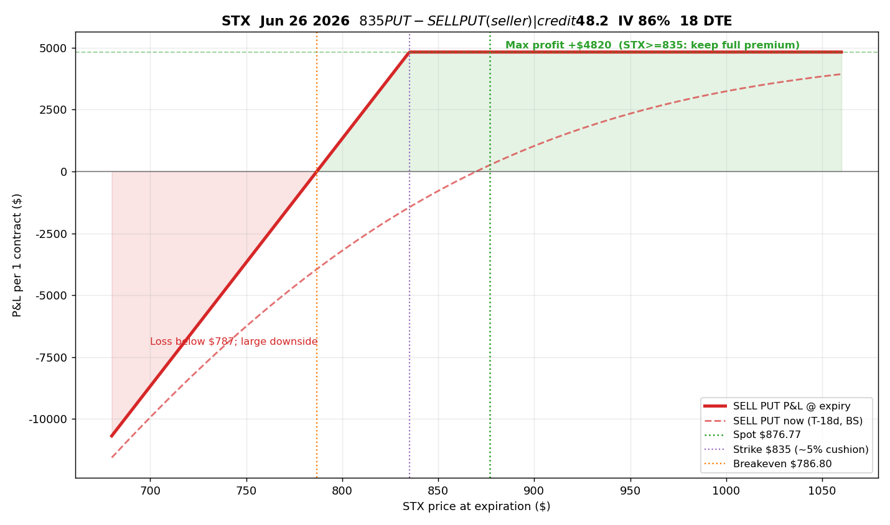
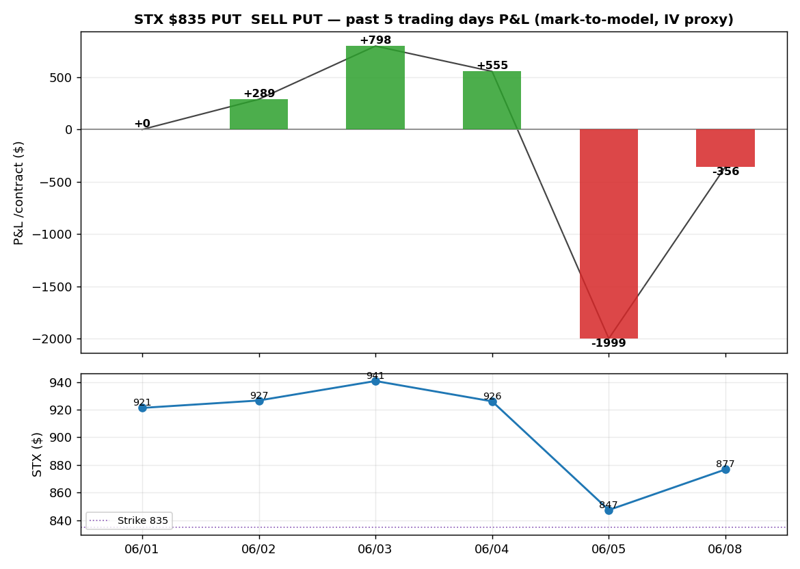

STX Jun 26 2026 $835 PUTSELL PUT 卖方
数据来源 yfinance(延迟报价) · 收权利金(中价) $48.2 · IV 86% · 18 DTE · 非投资建议
一句话看懂(大白话)
你现在收 $4,820,跟对方打个赌:赌 STX 在 6/26 之前不会跌到 $835 以下。
• 赌赢(STX 守在 835 上方) → 这 $4,820 全归你,这就是最大赚头。现价 876,还有约 5% 的下跌空间当缓冲。
• 赌输(STX 跌破 835) → 你得按 $835 把 100 股买下来(每张要先压 $8.35 万现金)。跌到 $786.8 以前,收的权利金还能抵掉亏损;再往下跌,亏得越来越多,股价归零最惨亏 $7.8 万。
简单说:大概率赚一笔小钱,小概率亏一笔大钱——典型的卖保险逻辑。所以只在「保费贵(IV 高)+ 自己愿意按 835 接货」时才值得做。

| 卖方(Sell Put) | 数值 |
|---|
| 收权利金 | +$4,820 / 张 |
| 盈亏平衡 | $786.80(守住上方就赚) |
| 最大盈利 | +$4,820(STX 到期 ≥ 835) |
| 当前安全垫 | 现价 876.77,距行权 ≈ 5% |
| 最大亏损 | 巨大(跌破 786.80 起亏,STX→0 时 −$78,680) |
| 占用保证金(CSP) | $83,500 / 张 |
过去 5 个交易日盈亏(若 5 天前卖出)
注:yfinance 无历史期权价,此为 BS 模型重算(IV 固定按 86% 代理),非真实成交盈亏

| 日期 | STX 收盘 | 卖方 P&L(对比卖出日) |
|---|
| 06/01(卖出) | $921.26 | $0 |
| 06/02 | $926.61 | +$289 |
| 06/03 | $940.69 | +$798 |
| 06/04 | $925.99 | +$555 |
| 06/05 | $847.47 | −$1,999 |
| 06/08 | $876.77 | −$356 |
解读:STX 前几天涨,卖方浮盈;6/05 大跌到 847(逼近 835)一度浮亏近 $2,000;6/08 反弹到 877,浮亏收窄到 −$356。说明卖方最怕快速下跌。
⚠ 卖方逻辑:IV 86% 偏高 → 权利金贵 → 利于卖。STX 只要不跌破 835(约 5% 缓冲)即全收权利金。
⚠ 下行敞口大:这是裸卖,跌破盈亏平衡后亏损随股价下跌放大。
⚠ 流动性极差(OI 3 / 量 4,买卖价差 $44.4↔$52),实盘滑点会明显侵蚀此理论损益。